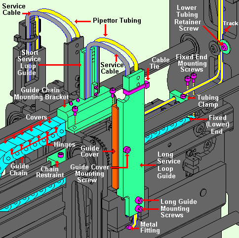

This procedure describes how to replace the reagent pipettor tubing.
Replace the reagent pipettor tubing when it requires service or repair.
Reference Graphics

Not shown:
Moving (upper) End of Guide Chain (hidden under Guide Chain Mounting Bracket).
Upper Tubing Retainer Screw (same as lower Retainer Screws).
Figure 340: Pipettor tubing routing at buffer reservoir
Note: DxI 600 instruments only have one pair (two) of pipettor tubes routed from the fluidics module.
Open the main upper left cover and insert an interlock switch bypass.
Drain the tubing for each pipettor being serviced.
From the
Main Menu, select
Diagnostics > Device Diagnostics > Digital Devices
> Peristaltic and Vacuum Pumps.
Enable the vacuum pump for the pipettor being serviced.
Verify that the pipettor is directly over the wash tower.
Remove the fitting from the pipettor precision pump and allow the wash buffer to drain into the wash tower.
Caution: When draining wash buffer from the tubing, do not let fluid leak onto the instrument or any of the instrument components. When disconnecting the tubing, hold a dry towel at the in-line fitting.
After the tubing is drained, disable the vacuum pump and exit the
Digital Devices screen.
Remove the reagent pipettor tubing.
Disable the pipettor motor, and manually move the pipettor carriage fully forward.
Use a 1/4-in wrench to remove the metal fitting from the ultrasonic transducer.
Cut and remove the cable-tie from the long service loop guide.
Remove the guide cover from the long service loop guide (one screw).
Remove the long and short service loop guides (two screws each).
Disconnect the service loop cables from the transducer and the transducer heater (two connectors).
Remove the tubing clamp near the end of the guide chain (one screw).
Cut the metal fitting from the old tubing.
Remove the metal fitting from the transducer.
Pull out the tubing through the rear of the chain.
Loosen one of the lower and upper tubing retaining screws (and washers) enough to remove the tubing.
Cut the tubing from the fitting on the pressure sensor.
Caution: When cutting the tubing from the fitting, do not damage the fitting.
Pull the tubing out of the track under the washers.
Open the guide chain.
Remove the guide chain mounting bracket from the transducer carriage (two screws).
Note: The guide chains can be installed with the fixed (lower) end and moving (upper) ends as shown in the drawing or they can be reversed. Either way is acceptable, since there is no operational difference or increased risk of wear or failure between the two options. It is not necessary to reverse the ends of any guide chain in any instrument.
Remove the moving (upper) end of the chain from the guide chain mounting bracket (two screws).
Remove the chain restraint (one screw).
Remove the screws holding the fixed (lower) end of the chain to the gantry (two screws).
Move the service loop cable forward and to the side to expose the mounting screws.
Extend the chain to straighten it, and then rotate it so that the covers on the links face upward.
Open the link closest to the moving (upper) end, and then squeeze and disconnect it from the moving (upper) end.
Note: The link cover must be open to allow the chain to flex while disconnecting the moving (upper) end.
Open the link closest to the (lower) end of the chain, and then disconnect the fixed (lower) end from the chain link.
Install the reagent pipettor tubing.
Open all the links and place the tubing into the chain, starting at the moving (upper) end.
Note:
Position the tubing under the service loop cable.
Confirm that the metal fitting end of the tube is toward the front of the instrument.
Close all of the chain covers.
Mount the fixed (lower) end of the chain to the rear of the gantry (two screws).
Rotate the chain so that the chain covers face downward, and then connect the chain to the fixed (lower) end of the tubing.
Note: The tubing must be routed so that it is on top of the service loop cable when it exits the rear of the chain.
Mount the moving (upper) end bracket to the metal mounting bracket (two screws).
Connect the front end of the chain to the moving (upper) end of the tubing.
Note: Check that the moving (upper) end is oriented correctly, before connecting it to the chain.
Attach the chain mounting bracket to the transducer carriage (two screws).
Connect the reagent pipettor tubing.
Connect the metal tubing fitting onto the transducer
Caution: To prevent damage to the ultrasonic transducer, tighten the metal fitting gently, without using too much force.
Connect the service loop cables to the transducer and transducer heater (two connectors).
Route the tubing and service loop through the long service loop guide, and then reattach the guide to the pipettor gantry (two screws).
Caution: To avoid stripping the plastic threads of the mounting holes, do not over-tighten the guide screws.
Mount the cover on the service loop guide, and then install a cable-tie into the slot in the long guide (one screw and one cable-tie).
Caution: Verify that the cable and tube loops clear the z-motor when the carriage is moved fully to the rear.
Note: Verify that the connector locking tabs face outward from the guide. View the other pipettors for reference when routing the tube and cable.
Route the tubing and service loop through the short guide, and then reattach the guide to the pipettor gantry (two screws).
Install the chain restraint over the chain onto the gantry (one screw).
Route the tubing through the hold-down washers on the gantry.
Mount the tubing clamp at the rear of the chain (one screw).
Route the tubing through the lower plastic clamp on the front of the reservoir, and then connect the tubing to the appropriate fitting on the pressure monitor.
Perform these quality checks before verification.
Verify that all the tubing fittings are secure, before running fluids through them.
Loosen and then retighten the flare coupler that connects the two pieces of tubing, to confirm that they do not leak.
Verify that the highest point on the tubing loop clears the drive motor, when the reagent pipettor carriage is moved toward the rear of the instrument.
Verify that the tubing is not kinked.
Verify that the tubing coupler is located directly over the overflow tray.
Prepare for verification.
Check the temperature of the transducer. It should be 35 °C to 39 °C.
Prime the reagent pipettor once, and monitor for leaks. Then prime the reagent pipettor ten times, and monitor for leaks.
Select
Diagnostics > Device Diagnostics > Analog Devices > Sensor Calibration > Pressure, and then calibrate the pressure monitoring for the pipettor that was serviced.
Perform 100 reps of the wet and dry test on each pipettor and verify that:
no failures are reported.
wet test CVs are 1% or less.
If the Wet/Dry test fails, then contact the local support organization for your area.
Remove interlock bypasses, close the instrument covers, initialize the system (if not ready).
Perform system checks and verify that all specifications are met.
Perform QC and verify that customer specifications are met.